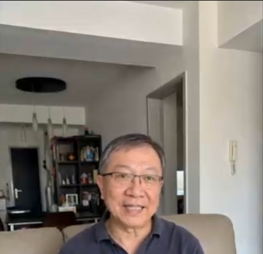
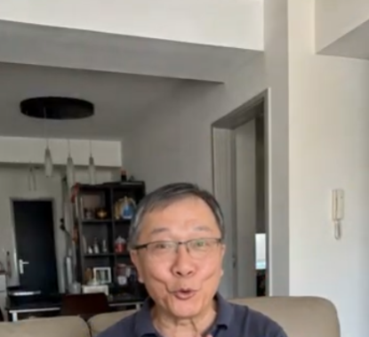

心态年轻，生活常青：老陈的退休智慧与终身学习乐趣

在很多人眼里，退休意味着节奏放缓与安逸静养，但在陈叔叔（老陈）看来，这恰恰是开启全新学习探索之旅的黄金时期。坐在温馨舒适的客厅里，老陈总是神采奕奕，乐于与家人和朋友分享生活中的新发现。
“只要对世界保持好奇心，年纪再大也能越活越年轻！”老陈眼中闪烁着热忱的光芒。从学会使用智能手机软件，到探索线上烹饪与园艺课程，他的退休生活过得比以往任何时候都更加充实多彩。
1. 保持年轻心态的三大生活法则
老陈常说，真正的年轻不在于容颜，而在于内心是否始终保持活泼与积极。他总结了自己幸福生活的三个小秘诀：
勇敢尝试新事物： 不因未知而畏惧，主动拥抱现代科技与新潮流，让生活始终充满新鲜感。
坚持学习与思考： 每天抽出时间阅读书本或观看科普知识，保持思维敏捷，充实精神世界。
传递欢笑与正能量： 用幽默与宽容的心态看待生活，把阳光与温暖带给身边的每一个人。

2. 拥抱当下，收获满满的幸福感
面对镜头，老陈露出了招牌式的温暖微笑。对他而言，幸福其实非常简单：清晨的一杯香浓咖啡、阳台上精心照料的绿植，以及与孩子们视频通话时分享的温馨瞬间，都是值得珍视的宝贵财富。
老陈积极向上的人生观不仅感染了家人，也给身边的邻居和朋友们带来了无穷的活力。他用实际行动证明，年龄只是一个数字，只要心中有爱、眼里有光，生活的每一个阶段都能绽放出别样的精彩。
“岁月增长的是阅历，而心态决定了生命的色彩。只要心怀热忱，每一天都是最美好的晴天。”
老陈的故事让我们看到，用豁达与好奇去拥抱生活，生命自会回馈以绵长而悠远的美好。
总结
保持终身学习的热情，拥有一颗豁达乐观的心，是保持生命活力的不二法门。愿我们都能如老陈一样，在时光的流转中收获属于自己的从容与快乐。
本故事分享积极健康的积极老龄化理念与家庭幸福生活智慧，传递温暖正能量。